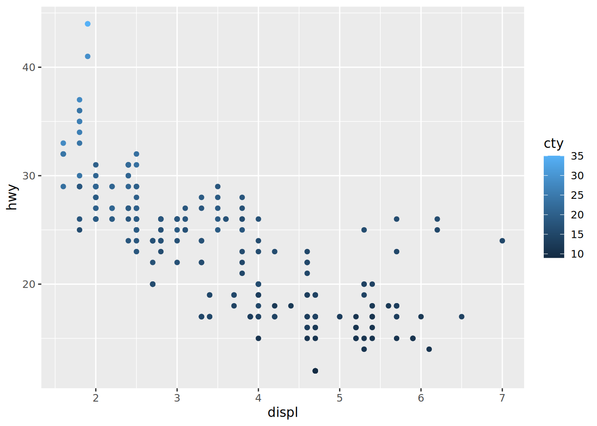
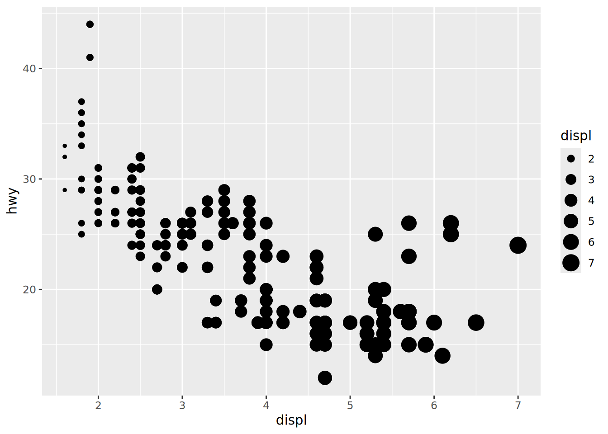
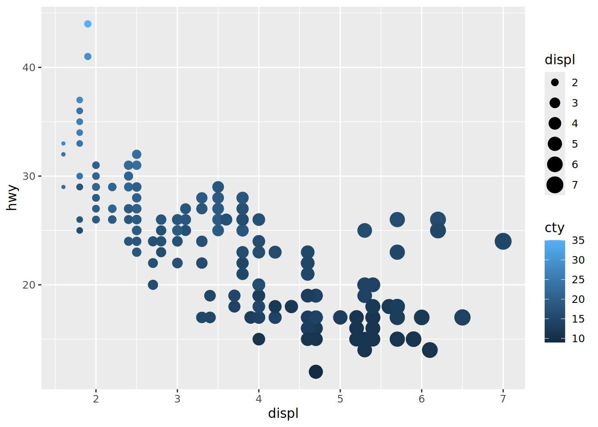

# Loading Packages
library(tidyverse)
library(palmerpenguins)
data(mpg)Visualizing Relationships
Exercise Solutions
Question 1
To see this information (# observation & # car models), I used summary(). For just those two numbers specifically, I would use unique() and dim().
# Full table info
summary(mpg) manufacturer model displ year
Length:234 Length:234 Min. :1.600 Min. :1999
Class :character Class :character 1st Qu.:2.400 1st Qu.:1999
Mode :character Mode :character Median :3.300 Median :2004
Mean :3.472 Mean :2004
3rd Qu.:4.600 3rd Qu.:2008
Max. :7.000 Max. :2008
cyl trans drv cty
Min. :4.000 Length:234 Length:234 Min. : 9.00
1st Qu.:4.000 Class :character Class :character 1st Qu.:14.00
Median :6.000 Mode :character Mode :character Median :17.00
Mean :5.889 Mean :16.86
3rd Qu.:8.000 3rd Qu.:19.00
Max. :8.000 Max. :35.00
hwy fl class
Min. :12.00 Length:234 Length:234
1st Qu.:18.00 Class :character Class :character
Median :24.00 Mode :character Mode :character
Mean :23.44
3rd Qu.:27.00
Max. :44.00 # Specific numbers
length(unique(mpg$model))[1] 38dim(mpg)[1][1] 234Question 2
NoteNote
The Problem
Make a scatterplot of hwy vs. displ using the mpg data frame. Next, map a third, numerical variable to color, then size, then both color and size, then shape. How do these aesthetics behave differently for categorical vs. numerical variables?
The Solution
mpg |>
ggplot(aes(x = displ, y = hwy)) +
geom_point()
mpg |>
ggplot(aes(x = displ, y = hwy, color = cty)) +
geom_point()
mpg |>
ggplot(aes(x = displ, y = hwy, size = displ)) +
geom_point()
mpg |>
ggplot(aes(x = displ, y = hwy, color = cty, size = displ)) +
geom_point()
# Raises error due to passing a continous variable to shape
mpg |>
ggplot(aes(x = displ, y = hwy, shape = cty)) +
geom_point()When the variable is categorical, all three aesthetics behave simillarly. Each category is assigned a unique color/size/shape.
When the variable is numerical, each of the aesthetics does something different:
colormaps each value on a gradient, keeping all information.sizerounds each value to be one of a set of sizes with a positive integer value. It loses some information from the variable.shapeis unable to map to a numerical (continous) variable and raises an error when we attempt to map it.